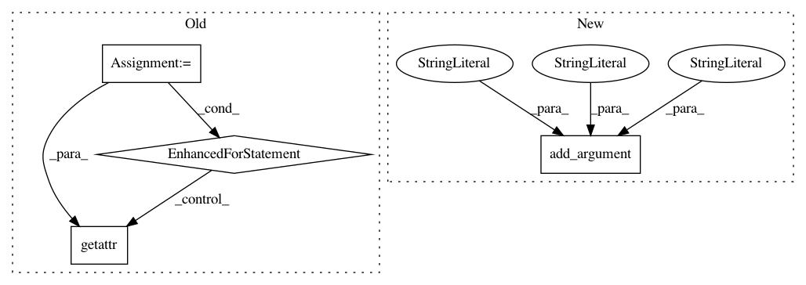

79675e6cc1e84a12999232090d905e6af505acde,train.py,,,#,17
Before Change
num_workers=args.cpu_workers)
// transfer some attributes from dataset to model args
for key in {"vocab_size", "max_ques_count"}:
config["model"][key] = getattr(dataset, key)
// ----------------------------------------------------------------------------
// setup the model and optimizer
// ----------------------------------------------------------------------------
encoder = Encoder(config["model"])
decoder = Decoder(config["model"])
// share word embedding between encoder and decoder
After Change
parser.add_argument("--config-yml", default="configs/lf_disc_vgg16_fc7_bs20.yml",
help="Path to a config file listing reader, model and "
"optimization parameters.")
parser.add_argument("--train-json", default="data/visdial_1.0_train.json",
help="Path to VisDial v1.0 training data.")
parser.add_argument_group("Arguments independent of experiment reproducibility")
parser.add_argument("--gpu-ids", nargs="+", type=int, default=-1,
help="List of ids of GPUs to use.")
In pattern: SUPERPATTERN
Frequency: 3
Non-data size: 4
Instances
Project Name: batra-mlp-lab/visdial-challenge-starter-pytorch
Commit Name: 79675e6cc1e84a12999232090d905e6af505acde
Time: 2018-12-24
Author: karandesai281196@gmail.com
File Name: train.py
Class Name:
Method Name:
Project Name: batra-mlp-lab/visdial-challenge-starter-pytorch
Commit Name: 20b6e3e88cad2a2d80da778a2c991ecc4640f94d
Time: 2018-12-25
Author: karandesai281196@gmail.com
File Name: evaluate.py
Class Name:
Method Name:
Project Name: scipy/scipy
Commit Name: 9fcb5a8ef300cc14c54e9f2633142f7b5e2ca53f
Time: 2015-07-05
Author: pav@iki.fi
File Name: tools/refguide_check.py
Class Name:
Method Name: main